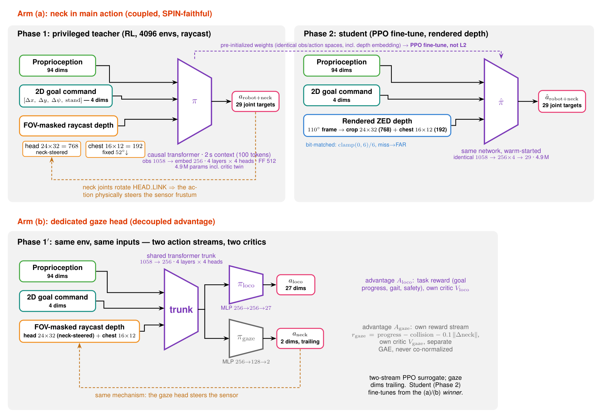
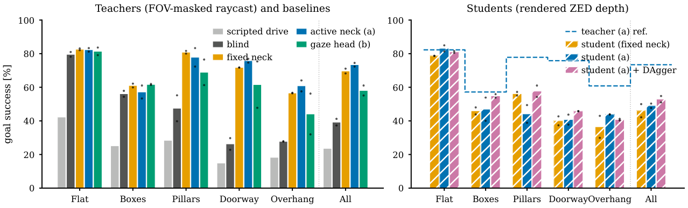
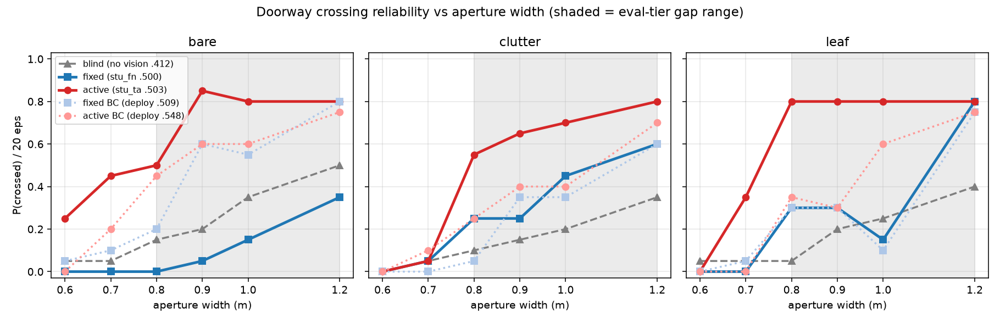
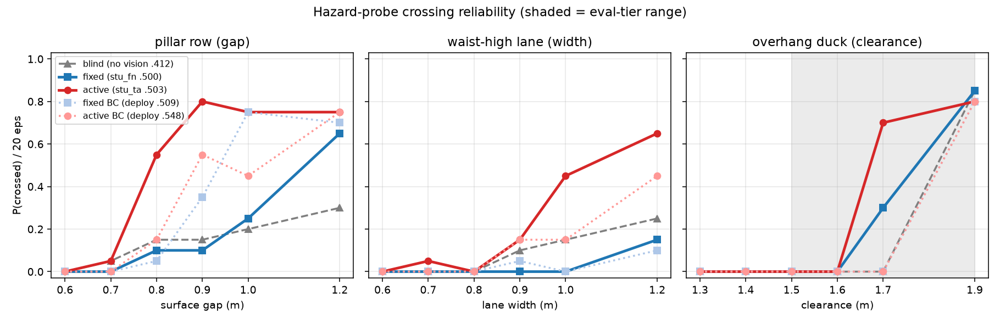

One transformer learns where to look and where to step: goal-directed humanoid navigation in clutter with a physically actuated neck — no planner, no maps, depth only.
The active-gaze student exploring a five-room house it has never mapped. The floor plan is revealed only by what the robot's own camera has seen. There is no map, no planner, and no state estimator beyond the policy's 2 s of context.
Humanoids that navigate real clutter must decide where to look and where to step at the same time. We train a single transformer policy for the IHMC Alex humanoid that couples locomotion with a physically actuated 2-DoF neck: goal-conditioned navigation emerges end-to-end from goal rewards, and active gaze emerges with it — without any explicit information-seeking objective. A privileged raycast teacher trained in 4096 parallel environments is distilled into a student that sees only rendered ZED-camera depth. On a five-tier clutter suite (flat, boxes, pillars, doorways, overhangs), goal-directed learning roughly triples a velocity-commanded scripted baseline, and directed gaze is the decisive ingredient in exactly the places geometry hides: parametric probes show the active student crosses 0.8 m doorways where its fixed-camera twin which is identical in every other respect almost never does.

A single transformer takes proprioception, FOV-masked depth, and the goal command as inputs, and outputs leg, arm, and neck actions in one action stream. The neck is a real actuated joint pair: where the robot looks is a learned motor decision, not a crop or attention weight. Teachers perceive via FOV-masked raycast (fast enough for 4096-env PPO); students inherit the same policy over rendered ZED X Mini depth via distillation with a DAgger term.
| Arm | overall | flat | boxes | pillars | doorway | overhang |
|---|---|---|---|---|---|---|
| scripted velocity drive | 23.6 | 42.3 | 25.2 | 28.4 | 14.9 | 18.3 |
| blind (learned, no vision) | 39.3 | 79.6 | 56.1 | 47.5 | 26.3 | 27.8 |
| fixed camera | 69.7 | 82.6 | 61.1 | 80.9 | 71.8 | 56.6 |
| active gaze | 73.4 | 82.3 | 57.2 | 77.8 | 75.8 | 60.8 |

Goal-reach success (%) by terrain tier, uniform final-checkpoint protocol, teachers. On flat ground blind and sighted are indistinguishable; on doorways and overhangs sighted arms triple the blind numbers. Every failure in the protocol is a contact crash and there are zero timeouts, so the gaps measure obstacle perception, not speed.
Active student — 25 goals, 10 falls, 0 deadlocks.
Fixed-camera student — 18 goals, 28 falls, 7 deadlocks; every pre-retry fall is at a doorway.
The two students are skill-matched twins on the overall benchmark (0.503 vs 0.500) and differ only in whether the neck moves. In the same house, on the same goals, the fixed-camera student reaches doorways whose far rooms its camera has already revealed, and falls in the aperture. Seeing the gap is not the same as crossing it.


Crossing reliability from parametric single-hazard probes (20 forced transits per point) across a causal ladder: no vision → undirected vision → directed vision. Shaded bands mark what the tiered benchmark already samples; the ladder separates hardest below them.
Directed gaze provides a geometry-dependent benefit rather than a universal navigation improvement. It is decisive for lateral clearance (doorway crossing 0.55 vs 0.21 fixed / 0.18 blind; pillar gaps 0.48 vs 0.18/0.14), much weaker in sustained sub-metre corridors (0.22 vs 0.03), and absent for vertical clearance. Notably, an undirected camera is nearly worthless for constrained transits; on featureless doorways it is worse than no vision at all.
Active student threading a 0.8 m doorway flanked by clutter, scanning the aperture edges on approach.
Fixed-camera student at a bare 0.8 m doorway (0/20 crossings): its pitched-down camera cannot localize a featureless gap; it drifts along the wall.
@inproceedings{glance2027,
title = {GLANCE: Gaze-Locomotion Integration for Active Humanoid
Navigation in Cluttered Environments},
author = {Author list to be added},
booktitle = {Under review},
year = {2027}
}